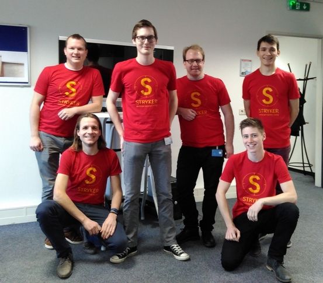

Happy new Stryker!
Published: 1 January 2017
A Happy new Year starts with a Happy new Stryker release! Made possible by the first ever Stryker Hackweek!
2017 - The year to invest into test quality
Up until now, when you were writing unit tests, you were actually investing in code quality. Catching bugs early by continuously exercising your code with unit tests and keeping your stakeholders happy by presenting them with a code coverage number of 85% or higher. But does code coverage tell the entire story? Are your tests actually able to detect bugs? How do you test your tests? That's the problem mutation testing sets out to solve.
Mutation testing in JavaScript
Due to JavaScript's dynamic nature, unit testing has become a fundamental tool to bring a higher level of robustness to JavaScript projects. Your average JavaScript app can easily have around 1,000 unit tests. Ensuring that these are actually effective can be a full-time job. This is where Stryker comes in. Stryker Mutator is our approach to providing a comprehensive mutation testing tool for the JavaScript environment.
We start out by altering your source code ever so slightly (e.g. turning a + into -) and then running your tests to see if they are
resilient to this "mutant". If they are (and they fail), all is fine - the mutant is dead. If they don't, the mutant survived and you have to fix your test.
Stryker Hackweek 2016
Stryker began its life as the thesis project of Simon de Lang. After graduating, his thesis tutor Nico Jansen joined him and continued development in the open on GitHub. Since then they had five major releases, improving performance, adding support for the Karma and Mocha test runners, as well as creating a fancy HTML reporter.
Up until now, the two of them did all of this in their own time, next to their daytime jobs as software engineers.
Around came the traditionally slow Christmas time period, allowing a select few of their colleagues at Info Support to join them for 4 days for the Stryker Hackweek 2016.
Achieved goals
The whole team enjoyed the experience a lot and had good fun extending Stryker and fixing issues. We mostly concentrated on integrating Stryker with SonarQube, as well as improving the first time usage experience.
All in all we made 47 commits, closed 18 issues, eat 6 kebabs and 4 subway sandwiches! Here's a quick overview of what we did:
- Created a Stryker SonarQube plugin, that turns survived mutants into neat SonarQube issues
- Added a blog to the Stryker homepage
- Upgraded the TypeScript compiler in all projects to 2.1
- Released version 0.5.5 of Stryker, including:
- A new progress reporter
- Limit the number of test-names to log in the clear text reporter
- Support to exclude online files from globbing
- Support for karma config parsing in the stryker-karma-runner
- Improved documentation for first time-users
- A plan for a series of blog articles
The Hackweek Team

The Stryker Hackweek team consisted of (from left to right):
- Alex van Assem: Agile coach and TypeScript hacker
- Nico Jansen: T-shaped software engineer
- Simon de Lang: Software engineer and TypeScript aficionado
- Philipp Weissenbacher: Software/BI engineer
- Jasper Catthoor: Software engineer (via Info Support Belgium)
- Wannes Van Regenmortel: Software engineer (via Info Support Belgium)
Want to try out Stryker? Begin with the handy quick start guide.
Want to get in touch? Find us on Gitter or Twitter.
Back to blogs